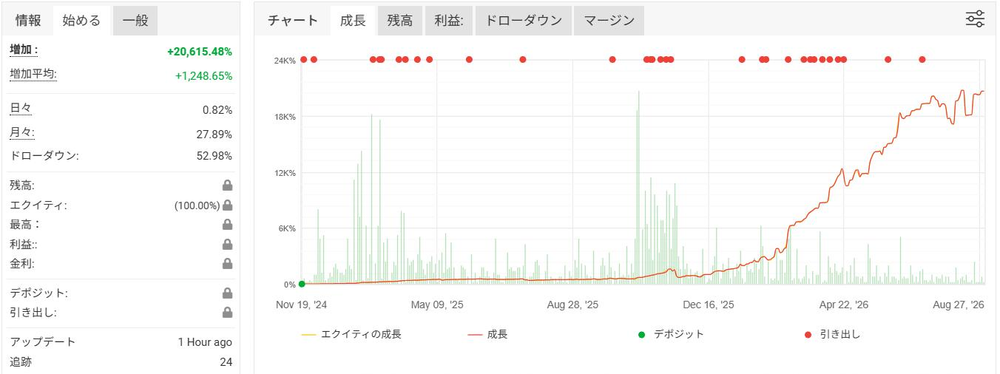

全履歴は第三者機関 myfxbook にて公開中 ─
実績ページを直接確認する
※2026年8月27日時点のmyfxbook公表値。過去の実績は将来の成果を保証するものではありません。
まずは、下記の「証拠」のすべてをあなたの目で直接確認してください。
参加希望・ご質問・お問い合わせは公式LINEへ

破綻0回SINCE 2024.11myfxbook 実績チャート（2024年11月〜2026年8月・増加 +20,615.48%）
切り取りではない、実際の取引端末の履歴です。動画はミュートで自動再生されています。
まずは、嘘偽りのない数字を見てください。
単利（絶対増加）+1,248.65%。複利（増加）なら +20,615.48% 達成。
もし2024年11月に10万円で複利スタートしていたら、現在の残高は2,060万円を超えています。
これが、本物のトレードが持つ「複利の力」です。
※myfxbook公表値（2026年8月27日時点）。複利は過去実績にもとづくシミュレーション値で、手数料・税金等は考慮していません。
将来の運用成果を保証するものではありません。
ネット上には、都合の良い部分だけを切り取った画像や、いくらでも偽造できるバックテストがあふれています。 しかし、このトレードは違います。実績の裏付けには 「myfxbook」 ── 100%改ざんが不可能な、第三者機関の公開システムを採用しています。
口座と直結した自動記録。スクリーンショットの切り貼りでは作れません。
負けた月も、損切りした月も、すべてそのまま記録されています。
公開しているからこそ、自信を持って「日本最高峰」だと断言できます。
myfxbook 実績ページ ─ 全履歴を一般公開中。登録不要・誰でも閲覧可能。
取引履歴・損益曲線・ドローダウンまで、あなたの目で直接確認できます。
myfxbook（マイ・エフエックス・ブック）とは、FX口座と直接連携し、
取引履歴・損益曲線・ドローダウンまでを自動で記録し公開する第三者機関のサービスです。
数字を後から書き換えることは一切できません。だからこそ、これは「最も信頼できる実績の証明」になります。
ネット上には自動売買やコピートレードの広告があふれていますが、
その多くは myfxbook を掲載していません。なぜでしょうか。
多くの販売者が myfxbook を載せないのは、見せたくないからではありません。載せた瞬間にすべてが明るみに出るため、そもそも載せられないのです。
勝ったトレードだけを切り取ることも、都合の悪い月を隠すこともできません。負けも損切りも含め、すべてが正直に記録され続けます。
改ざんが効かない土俵で、これだけの実績を出し続けられる戦略はごくわずか。だからこそ私たちは、堂々と myfxbook を全公開できます。
このトレードの最大の特徴は、「戦略的な損切り」を徹底している点です。 多くの口座が破綻する原因は、損切りができずに含み損に耐え続け、最後には耐えきれずゼロになるから。 この戦略では、総資産の20%以内で明確に損切りを実行します。
感情ではなくルールで切る。総資産の20%以内で機械的に損切りを実行します。
一時的なマイナスは「破綻させないための守り」。その後の利益で取り返す、その繰り返しが右肩上がりの曲線を作ります。
「いつ溶けるか分からない」暗闇を歩くような恐怖から、あなたを解き放ちます。
損切りを実践しながら積み上げた、22ヶ月の全記録です。マイナスの月も隠さず公開します。
見ての通り、マイナスの月もあります。しかし、これこそが「損切りを正しく行っている証拠」であり、 結果として破綻回数はゼロです。
同じシステムを稼働する運用者と、リアルタイムで情報交換できます。
LINE公式LINEはこちら（無料）myfxbook公表の月間平均 +27.89%（2026年8月27日時点）をもとに、 あなたの資金が1年後にいくらになるかを単利・複利で試算できます。
※本シミュレーターは、myfxbookが公表する過去の月間平均増加率（+27.89%・2026年8月27日時点）を機械的に当てはめた机上の試算です。 将来の運用成果を保証するものではなく、相場状況により損失が発生する可能性があります。税金・手数料・スリッページ等は考慮していません。
myfxbookで実績が全部見られるので疑いようがない。半年運用していますが、口座残高は想像以上に増えました。
設定はLINEで聞きながら30分ほどで完了。FX未経験の私でも問題なく始められました。
月によって成績の波はありますが、損切りルールが明確なので安心して任せられます。
3万円から始めました。少額でも複利でじわじわ増えていくのを見るのが毎月の楽しみです。
退職金の一部で運用中。オープンチャットで他の運用者の状況が見られるのが心強いです。
毎日エントリーがあるわけではないので、毎日動きを見たい自分には少し物足りない。ただ実績は本物だと思います。
以前ほかの自動売買で失敗しましたが、ここは損切りがきちんと入るので全く別物でした。
マイナスの月もあるので★4。それでもトータルではしっかりプラスになっています。
完全放置でこの成績は正直すごい。VPSも不要なので手間が一切かかりません。
質問への返信が早くて丁寧。数字を盛らずmyfxbookをそのまま見せてくれるのが信頼できます。
※個人の感想であり、運用成果を保証するものではありません。
本案件は最低約3万円からスタートすることができます。
また、専用の匿名オープンチャットもありますので、
同じシステムを稼働する運用者とコミュニケーションをとることも可能です。
すべて公式LINEで受け付けています。
LINE公式LINEはこちらFX取引は元本割れのリスクがあります。
投資は必ずご自身の判断と責任で行ってください。
全てにおいて、こちらからお金をいただくことは一切ありません。
一切かかりません。完全無料です。
コピートレードなので必要ないです。
約3万円からスタートできます。
あなたの資産運用が、
恐怖ではなく「楽しみ」に
変わる瞬間を。